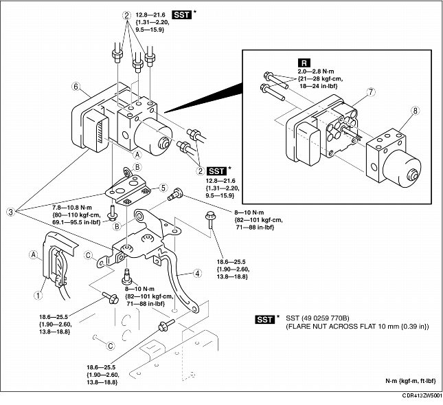
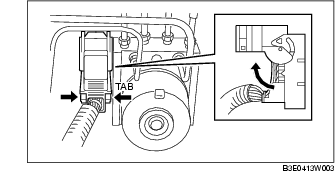
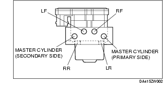
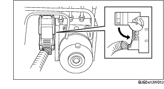

ABS HU/CM removal/installation
- • The internal parts of the ABS HU/CM could be damaged if dropped. Be careful not to drop the ABS HU/CM. Replace the ABS HU/CM if it is subjected to an impact.
1. Remove the battery and battery tray.
2. Remove in the order indicated in the table.
3. Install in the reverse order of removal.

|
1
|
Connector
(See Connector Removal Note.)
(See Connector Installation Note.)
|
|
2
|
Brake pipe
(See Brake Pipe Removal Note.)
(See Brake Pipe Installation Note.)
|
|
3
|
ABS HU/CM component
|
|
4
|
Bracket
|
|
5
|
Bracket
|
|
6
|
ABS HU/CM
|
|
7
|
ABS CM
|
|
8
|
ABS HU
|
Connector Removal Note
1. Pull the connector cover up in the direction of the arrow while pressing the tab of the connector cover.

2. Pull the connector toward the vehicle front and remove it.
Brake Pipe Removal Note
1. Place an alignment mark on the brake pipe and ABS HU/CM.

2. Apply protective tape to the connector to prevent brake fluid from entering.
3. Remove the brake pipe.
Brake Pipe Installation Note
1. Align the marks made before removal and install the brake pipe to the ABS HU/CM referring to the figure.

Connector Installation Note
1. After connecting the connector, verify that the connector cover is completely pushed in.
